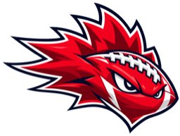

Can-U FOOTBALL
Canadian university football
Your game.
Your campus.
Your edge.
From the opening kickoff to the Vanier Cup. Follow the scores, explore the stats, and size up the next matchup—all in one place.
OUARSEQAUSCANADA WEST
